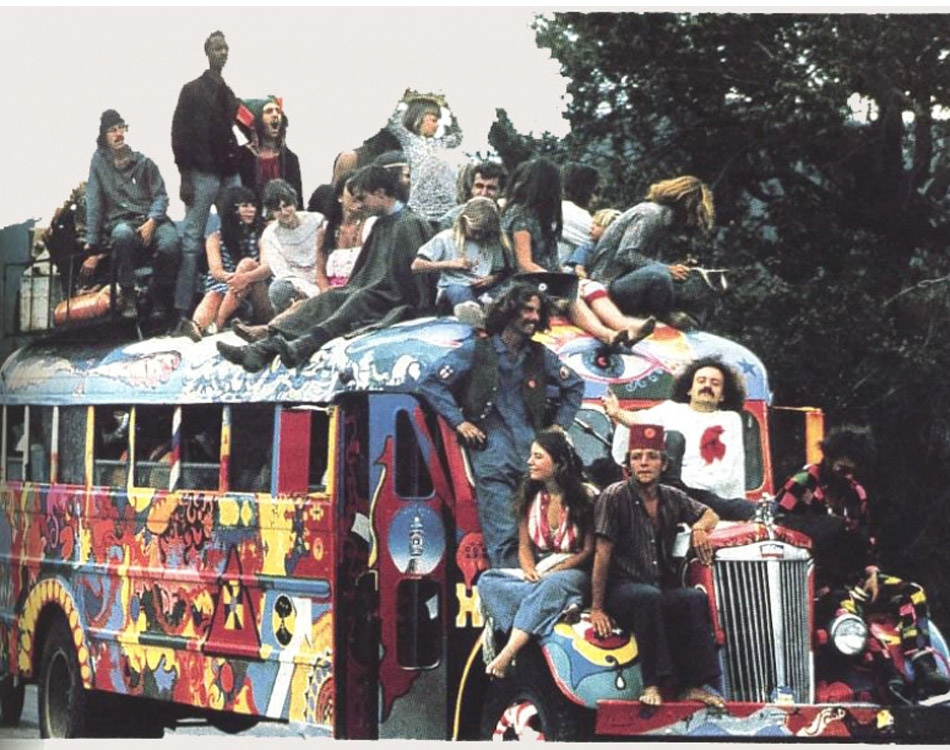
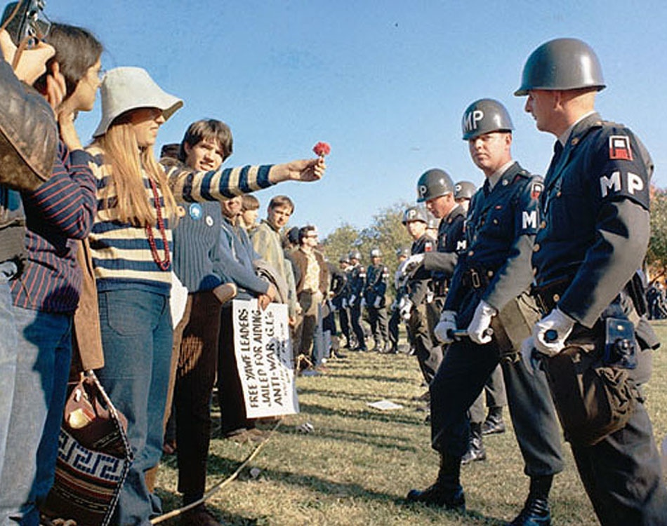

Flower Power
Rewolucja
Była to rewolucja proklamująca bunt młodych przeciwko światu dorosłych (nie wierzcie nikomu po trzydziestce) i jego instytucjom: rodzinie, Kościołowi, szkole, zakładowi pracy, szefom, rywalizacji, pieniądzowi, wojsku, wojnie, normom, przymusom, zakazom (zakazuje się zakazywać), domniemanej hipokryzji, konwencji ubioru, własności prywatnej.
Konsekwencjami istnienia tego ruchu stało się rozszerzenie zasięgu ruchów pacyfistycznych i ideologii ekologicznych, zainteresowanie duchowością Wschodu, krytyka wyścigu szczurów, konformizmu i wszelkiego konsumpcjonizmu. Ruch ten przyczynił się do rozpowszechnienia substancji psychoaktywnych, w szczególności marihuany. Był jednym z ogniw przyczyniających się do tzw. rewolucji seksualnej. Stanowił też jedno z pośrednich źródeł ruchu New Age.
Make love, not war
Nadbudową ideologiczną ruchu hippisowskiego był skrajny pacyfizm, co wyrażają hasła Make love, not war (czyń miłość, nie wojnę), Non-violence (bez przemocy) i Peace and love (pokój i miłość). Wszyscy ludzie są braćmi, a świat jest na tyle duży, że starczy na nim miejsca dla każdego
Hippis żyje dniem dzisiejszym, żyje każdą chwilą, nie martwi się o to, co będzie jutro, nie nosi zegarka, bo czas dla niego jako taki nie istnieje. Chodzi boso, gdyż jest dzieckiem ziemi i nie depcze matki natury, stara się żyć z nią w zgodzie i ją rozumieć. Unika kontaktów z wszelkimi instytucjami, zarówno świeckimi, jak i kościelnymi, a zawsze robi swoje. Hippis prowadzi życie w drodze, tzn. nie ma stałego domu, ciągle się przemieszcza. Żyje w zgodzie z naturą i odrzuca normy, które obowiązywały w świecie dorosłych, a zastępuje je własnymi kryteriami moralnymi, które cechowała daleko posunięta swoboda obyczajów – zamiast wojować, lepiej uprawiać seks.
Hippis zwykle jest wegetarianinem – zwierzęta to moi przyjaciele, a ja nie jadam przyjaciół. Często żyje w tzw. komunie hippisowskiej, gdzie wszystko jest wspólne, nawet dzieci. Stara się być samowystarczalny, uprawia ziemię, szyje ubrania, wykonuje drobne sprzęty codziennego użytku. Zazwyczaj nie posiada stałego zatrudnienia.
Chart afgański i Ibiza

W latach 70. wśród hippisów szczególnym poważaniem cieszył się chart afgański. Powodem tego nie był tylko wygląd psa, którego długie włosy mogłyby przypominać psiego hippisa, ale jego charakter. Jest to bodajże najtrudniejsza do ułożenia rasa psów, która nigdy nie nawiązuje bliskiego kontaktu z ludźmi. Ta właśnie ich wyniosłość i niezależność tak urzekła hippisów, że ci widzieli w nich bratnie dusze
Również w latach 70. hippisi "odkryli" Ibizę – wyspę na Morzu Śródziemnym nieskażoną przez cywilizację i nieznaną turystom. Zaczęli tu przyjeżdżać, by z dala od cywilizacji zaznawać swoistego spokoju ducha. Do dzisiaj na wyspie można ich spotkać i są miejscową atrakcją turystyczną. Skomercjalizowali się i żyją sprzedając własnoręcznie wykonane hippisowskie pamiątki turystom.